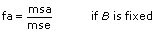

2D ANOVA Factors, Levels, and Cells
A factor is a basis for categorizing data. For example, if you count the number of sit-ups individuals can do, one basis of categorization is age. For age, you might have the following levels:
| Level 0 | 6 years old to 10 years old |
| Level 1 | 11 years old to 15 years old |
Another possible factor is weight, with the following levels:
| Level 0 | less than 50 kg |
| Level 1 | between 50 and 75 kg |
| Level 2 | more than 75 kg |
Now, suppose that you made a series of observations to see how many sit-ups people could do. If you took a random sampling of n people, you might find the following results:
| Person 1 |
8 years old (level 0) |
30 kg (level 0) |
10 sit-ups |
| Person 2 |
12 years old (level 1) |
40 kg (level 0) |
15 sit-ups |
| Person 3 |
15 years old (level 1) |
76 kg (level 2) |
20 sit-ups |
| Person 4 |
14 years old (level 1) |
60 kg (level 1) |
25 sit-ups |
| Person 5 |
9 years old (level 0) |
51 kg (level 1) |
17 sit-ups |
| Person 6 |
10 years old (level 0) |
80 kg (level 2) |
4 sit ups |
and so on.
If you plot observations as a function of factor A and factor B, they fall into cells of a matrix with factor A as rows and factor B as columns. Each cell must contain at least one observation, and each cell must contain the same number of observations.
To perform the analysis of variance, you specify an array X of observations, with values 10, 15, 20, 25, 17, and 4. The array Index A specifies the level (or category) of factor A to which each observation applies. In this case, the array would have the values 0, 1, 1, 1, 0, and 0.
The array Index B specifies the level (or category) of factor B to which each observation applies. In this case, the array would have the values 0, 0, 2, 1, 1, and 2. Finally, there are two possible levels for factor A and three possible levels for factor B, so you pass in a value of 2 for the A levels parameter and a value of 3 for the B levels parameter.
You can apply any one of the following models, where L is the specified observations per cell:
- Model 1: Fixed-effects with no interaction and one observation per cell (per specified levels x and y of the factors A and B, respectively).
- Model 2: Fixed-effects with interaction and L > 1 observations per cell.
- Model 3: Either of the fixed-effects models with interaction and L > 1 observations per cell.
- Model 4: Random-effects with interaction and L > 1 observations per cell.
2D ANOVA Random and Fixed Effects
A factor is a random effect if it has a large population of levels about which you want to draw conclusions but such that you cannot sample from all levels. You thus pick levels at random and hope to generalize about all levels. A factor is a fixed effect if you can sample from all levels about which you want to draw conclusions.
The input parameters A levels and B levels represent the number of levels in factors A and B, respectively, as well as whether the factors are random or fixed. For example, if factor A is random, you set A levels to be negative the number of levels in factor A. Notice that if there is only one observation per cell, both A levels and B levels must be positive. That is, you use model 1.
2D ANOVA Statistical Model
Let xpqr be the rth observation at the pth and qth levels of A and B respectively, where r = 0, 1, ..., L – 1.
Model 1 expresses each observation as the sum of four components.
xpqr = µ +  p +
p +  q + pqr
q + pqr
Models 2, 3, and 4 express each observation as the sum of five components.
xpqr = µ + p + q + ()pq + pqr
where
q = µq – µ
- µ is the overall mean response (the average of the mean response for all the populations).
- p is the effect of the pth level of factor A
(equal to µp – µ where µp is the average of the pth level of factor A over all levels of factor B).
- q is the effect of the qth level of factor B
(equal to µq – µ where µq is the average of the qth level of factor B over all levels of factor A).
- ()pq is the interaction between the pth level of factor A and the qth level of factor B
(equal to µpq – (µ + p + q) where µpq is the population mean of the pqth cell).
- pqr is the deviation of xpqr from the population mean response for the pqth population.
2D ANOVA Hypotheses
Each of the following hypotheses is a different way of saying that a factor or an interaction among factors has no effect on experimental outcomes. This VI assumes that there are no effects and then seeks evidence to contradict this assumption. The following are the three hypotheses:
- (A) that p = 0 for all levels p if factor A is fixed, and that
 A2 = 0 if factor A is random.
A2 = 0 if factor A is random.
- (B) that q = 0 for all levels q if factor B is fixed, and that B2 = 0 if factor B is random.
- (AB) that ()pq = 0 for all levels p and q if both factors A and B are fixed, and that A2 = 0 if either factor A or factor B is random. (This does not apply to model 1. In model 1 there is no interaction, and the associated output parameters are superfluous.)
2D ANOVA Assumptions
The 2D ANOVA VI makes the following assumptions:
- Assume that for each p, q, and r, pqr is Normally distributed with mean 0 and variance e2.
- If a factor such as A is fixed, assume that the populations of measurements at each level of A are Normally distributed with mean p + µ and variance A2, and that all the populations at each of the levels have the same variance. In addition, assume that p sum to zero. Analogous assumptions are made for B.
- If a factor such as A is random, assume that the effect of the level of A itself, p, is a random variable Normally distributed with mean 0 and variance e2. Analogous assumptions are made for B.
- If all of the factors such as A and B associated with the effect of an interaction ()pq are fixed, assume that the populations of measurements at each level are Normally distributed with mean µpq and variance AB2. For any fixed p, ()pq sum to zero, when summing over all q. Similarly, for any fixed q, the means ()pq sum to zero, when summing over all p.
- If any of the factors such as A and B associated with the effect of an interaction ()pq are random, assume the effect is a random variable Normally distributed with mean 0 and variance AB2. If A is fixed but B is random, then also assume that for any fixed q the means AB2 sum to zero, when summing over all p. Similarly, if B is fixed but A is random, assume that for any fixed p the means AB2 sum to zero, when summing over all q.
- Assume that all effects taken to be random variables are mutually independent.
2D ANOVA General Method
In each of the models, the VI breaks up the total sum of squares, tss, a measure of the total variation of the data from the overall population mean, into some number of component sums of squares. In model 1
tss = ssa + ssb + sse
whereas in models 2 through 4
tss = ssa + ssb + ssab + sse
Each component sum in tss is a measure of variation attributed to a certain factor or interaction among the factors. Here ssa is a measure of the variation due to factor A, ssb is a measure of the variation due to factor B, ssab is a measure of the variation due to the interaction between factors A and B, and sse is a measure of the variation due to random fluctuation. Notice that with model 1 you have no ssab term. This is what no interaction means.
The VI divides each of the values ssa, ssb, ssab, and sse by their own degrees of freedom to compute the mean square quantities msa, msb, msab, and mse. If one factor, such as factor A, has a strong effect on the experimental observations, the respective mean square quantity msa will be relatively large.
Testing the 2D ANOVA Hypotheses
For each hypothesis, the VI computes a number f that is used to calculate the associated sig probability. For example, for the hypothesis (A), that p = 0 for all the levels p, (fixed A), the VI computes
then
sigA = Prob{Fa – 1, (a – 1)(b – 1)} > fa
where
Fa – 1, (a – 1)(b – 1)
is an F distribution with degrees of freedom a – 1 and (a – 1)(b – 1). You then can use the probabilities sigA, sigB, and sigAB to determine when you should reject the associated hypotheses (A), (B), and (AB).
How do you know when to reject the null hypothesis? For each hypothesis, you choose a level of significance. This level of significance is how likely you want it to be that you mistakenly reject the hypothesis (a common choice is 0.05). Compare your chosen level of significance with the associated sig probability output. If the sig probability is less than your chosen level of significance, you should reject the null hypothesis.
For example, if A is a random effect, your chosen level of significance is 0.05, and the output sigA is 0.03, then you must reject the hypothesis A2 = 0 and conclude that factor A has an effect on the experimental observations.
2D ANOVA Formulas
Let xpqr be the rth observation at the pth and qth levels of A and B respectively, where r = 0, 1, …, L – 1.
Let
a = |A levels|
b = |B levels|


then
dofab = (a – 1)(b – 1) if L > 1
dofab = 0 if L = 1
dofe = ab(L – 1) if L > 1
dofe = (a – 1)(b – 1) if L = 1


sigA = Prob{Fa – 1, ab(L – 1) > fa} if B is fixed
sigA = Prob{Fa – 1, (a – 1)(b – 1) > fa} if B is random
sigB = Prob{Fa – 1, ab(L – 1) > fb} if A is fixed
sigB = Prob{Fa – 1, (a – 1)(b – 1) > fb} if A is random
sigAB = Prob{F(a – 1)(b – 1), ab(L – 1) > fab}
 Add to the block diagram
Add to the block diagram Find on the palette
Find on the palette